前言
我一直以来都有着亿点点小想法，从小学到现在，突然想起来决定写一篇博客说一下聊一聊
这些想法可能已经被别人实现了，也可能科技还没发展到那个程度，有的我打算做，但是因为各种各样这原因没有做或者没成功（没时间、工期长、没能力、不会、懒得做……），有的我已经实现了我就不写了
里面有些想法，或许实用，或许是个伪需求，或许很懵懂无知……但我觉得至少对我来说都有着它自己的价值，甚至说，有的可能未来就能实现了呢，也或者能够启发到别人呢
例如小学的时候有一个想法，后来发现这个想法和UWB定位非常像
例如我想能不能让收集背面只露出一颗镜头位置然后用内部的机械结构切换镜头，结果真被华为给实现了
那么就让我简单介绍一下我曾经诞生过的哪些小想法吧，水一篇博客，哪篇重要哪篇乱水你自己判断吧
想法
右键菜单命令快速执行
在文件夹或者文件打开右键菜单的时候，修改右键菜单项，展示工具
例如在含有.git目录的文件夹右键可以显示commitpushpull等常用命令，然后点commit会弹出窗口请求输出文本（commit message）
在含有package.json或直接右键这个文件，会读取文件内容，显示npm命令
也可以有全局存在的，这些可以由用户自行导入添加
一种不太一样的触屏UI操控
之前先过一种不太一样的全面屏手势（其实也不完全是全面屏手势），长这样：
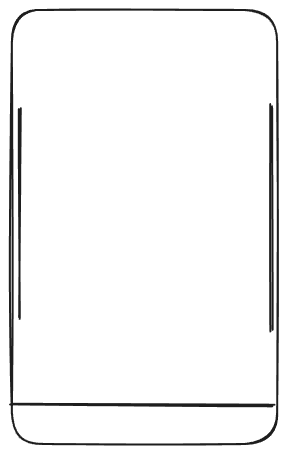
左右两边的小横条是内滑返回，和现在除了苹果以外的机都一样，但是它又有着现在大部分手机底部小横条的作用，侧边上下滑切换应用，根据内滑的时候是在开始的时候停留还是结束的时候停留决定返回桌面还是打开多任务
现在感觉返回桌面和多任务的逻辑不是很好，那我改进一下，侧边上划返回桌面，下滑长这样：
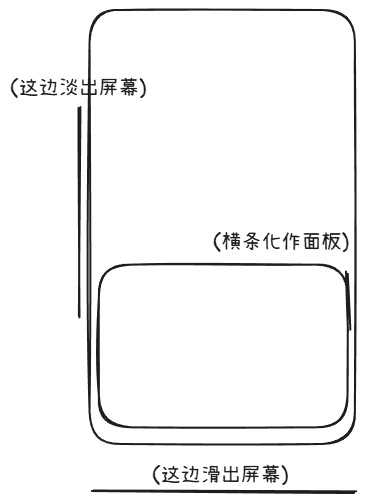
横条转化成面板，打开半屏多任务界面，松手就可以操作了，也可以不松手，直接把手指拖到对应的卡片直接切换引用
而下面那个东西充当了现在状态栏+灵动岛的功能（有这个想法的时候其实已经有了原子通知，但是还没有灵动岛），也可以由前台或后台软件自定义内容并左右切换
这玩意比较厚，可以直接展示通知，查看全部通知可以抽屉式打开
Taple的完整版
之前做了一个工具，叫做Taple，一个简约风格表格，我上课抄笔记就这风格（没什么特殊情况直接去掉短分割线），可以直接在WebTooys找到并使用
但其实这个并不是我的设想的完整版，在那个仓库中，我留了一张图片：i-dont-have-that-time-or-ability-to-make-the-full-ver.png——我没时间和能力做完整版

(此处直接链接了githubusercontent raw的图片链接，有可能因为你的网络原因访问不了)
简单地说就是可以有多层表头，然后又给表头加上表头（有时候真的会用得上），支持四面的
还有一点没有展示，这个适合手绘但是如果用到电脑就有点破坏美感了，就是自定义单元格高级版：
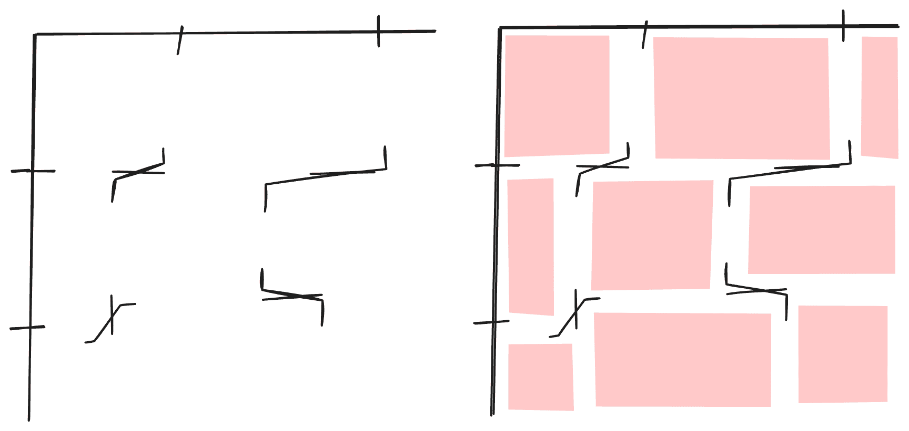
红色是单元格区域示意，这样一搞九年呢使得每个单元格占用的位置不一样了，明明是同一行，你要高一点，明明是同一列，你腰窄一点
环形无人机
这个应该不太能够被实现
一个环形的玩意，布满了可以持续喷气的小型的压缩空气机，持续喷漆，可以抵消自身重力，通过调整喷气可以调整空中姿态，随意飞行，同时相对安全一些
json-render
这个Vercel已经做了类似的，叫做json-render，这里直接拿来做标题
我的想法是这样的：将一个数据，无论什么格式，发送给AI，然后AI生成特定格式的json，程序直接解析为UI组件展示出来
不过不一样的是，我的想法里面，AI不直接输出填写各种数据，而是要经过特定表达而让工具代入数据，输出的内容里面不包含用户输入的数据
数据->AI->json->UI组件->渲染
不一样的视频剪辑软件
直接重写时间线逻辑，带来不一样的体验，对以文本为中心的视频制作特别方便
时间线只有4个轨道，且轨道操作逻辑不一样
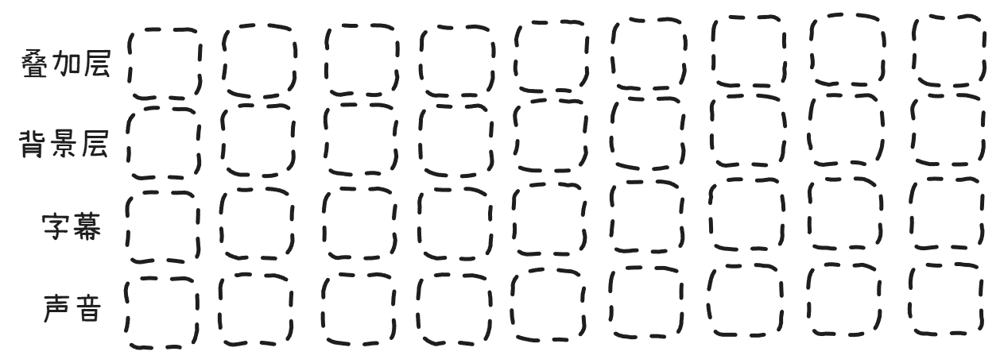
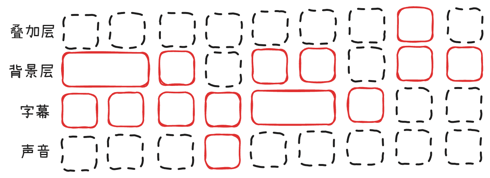
单位不是时间，而是“块”，导出视频时需要程序自行计算素材时长
一个素材至少占用一个块的位置，也可以横向拖动占据无限个块的位置，与其它轨道的素材进行对齐
字幕文字与字幕语音时长相同（这两个合并到一个轨道显示），背景层和字幕之间一般是取决于最长的素材的时长，如果遇到图片和动图（或设置成动图类型的视频）则默认为填充这个块可以填充的时长，尽可能严密
默认一个轨道播放完后到下一个轨道，也可以加上延时块调整时间
例如上面的那个图片可以转换为这样的时间线（根据实际情况，不唯一）
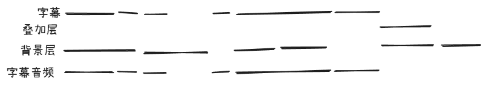
这个时候AI生成也可以发力了，当然，不一定偏要是AI做视频，可以是AI辅助生成素材，不如背景图和音乐等，而字幕部分其实我最初的时候就是想着要AI配音，最开始都没考虑人工配音的
我们可以准备一个文本，分好短之后交给AI生成配音并填充到轨道上，再去搞画面
也可以不用AI配音，可以对着软件一句一句录，也可以直接一次性录完然后AI自动对轴并分隔音频
有些素材需要切片，那就提供一个切片机，这个也可以单独拎出来的，简单地说就是标记时间点切割媒体，可以存到媒体库作为待使用的素材，也可以直接渲染保存，标记有三种类型，开始、结束、分隔，其实就是阶级软件里面拿三个按键，只不过分隔素材可以直接导出了
叠加层是一种“玻璃板”，可以投过去看看下面几层是什么内容，然后放上你想要的图片和文本，就能展示出来了
AI
这里集中写一个LLM相关的，虽然前面也有AI相关的内容
我对AI详细原理的了解不深，有些内容可能不太合理，我关注的主要是新模型发布和新AI产品
我对AI的看法
最开始GPT3火起来的时候，我就开始关注LLM了，使用秦始皇的Pandora体验（当时OpenAI要手机号，我注册不了），也成功申请Qwen的waitlist内测体验
可是当时我并不太看好它，一个读后续写玩意，纯纯堆参数量，大力出奇迹，没什么值得深入发展的
再加上当时LLM实力一般般，我觉得，这不过是个小玩具罢了，聊聊天倒还可以，干活就算了
逐渐地，LLM发展起来了，一年又一年，我的关注重点慢慢那转移到了LLM上，它的确越来越强，或许真有点意思
但是现在，我观念有点改变了，看着LLM一步一步发展繁荣
转念一想，人也不是一样吗，由一堆无序的神经元的无序累加构成有序整体，或许AI也是这样的吧
我依旧不看好GPT这类模型能够实现AGI，它做不到，要么太慢要么太蠢，输入输出内容还有限制，还有上下文限制，我认为的AGI应该要用模型路由，切换到对应的专家模型，并由多个模型和Agent同时共同协作，而且应该要有比GPT更高效的数据、存储、沟通、理解、注意力机制，而且不能局限于GPT这一种AI，GPT可不是万金油
我想，AI还是代替不了人，人有创造力，有情感，这些都是来源于记忆，人从诞生开始就一直在输入，一直忘却，过往大量的经历练就了人性，过往的经历汇聚起来，激发创造力的灵感，产生对事物的情感
而AI是一次性预训练出来的，它的“经历”是互联网上各种垃圾，一份份垃圾输入其中，没有主体，没有“自我”，没有足够的价值，只是一股脑输入，练就了“机性”
模型
用思维导图和注意力数据库思考的AI
很久之前设想过一种AI，它不是线性的一路递归生成到底，而是“整理”
整个思维链会被替换成一个个节点，每个节点承载着一些信息，作为内容的载体，类似于思维导图，模型会根据注意力机制和节点数据库做出对节点的修改（增删、更改内容、建立各种类型的联系（与或否、有关、无关、相反、包含等）等），最后用拆分和再整理的方式整理出结果
这样的话，应该就能够实现实时输入实时输出，进行实时响应了，我想这样或许还能突破一下“预训练”，对模型实时更新进化
还有一种基于类似神经元的向量的AI，直接模仿神经元，用一堆向量代替神经元，模拟电信号在神经元之间传递，根据神经元激活增删新的向量和方向，直接人造电子大脑
多通道输出混合模型
那么要是基于GPT这种类型发展呢，我有一个想法：多通道(multi-channel)
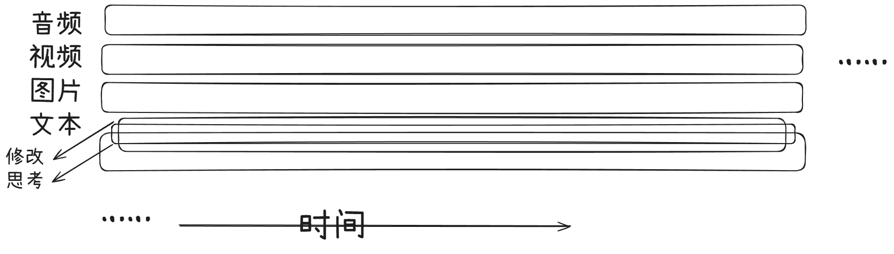
整个生成流程分为了多个同时存在的通道，用于处理不同内容
类似MoE，内置多个专家模型，每个专家至少两个模态的输入输出，通过一个Router模块切换模型，做到每个通道各自一个CoE(Chain of Experts)，然后每个CoE都是由MoE组成的（反复套娃）
生成内容的时候，模型会根据上下文（包含其它通道）的内容进行生成，不同通道由不同专家模型同时生成，也可以暂时休整等待其它通道，示意图如下
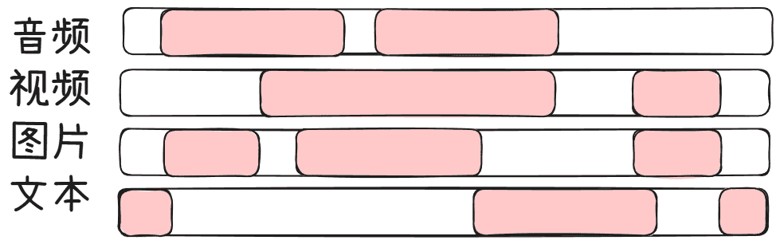
当然，一个通道固然是要对其它通道有影响的的，构成一个整体
而对于每个通道，还有一个子通道——修改，文本通道还额外有一个子通道——思考
先说思考子通道，这么做可以做到一边输出正文内容一边思考，加快生成速度的同时输出也是经过了思考，和前面一样，也是可以一直生成也可以等待另一个通道
那么思考之后就可以验证结果并修改输出内容了，修改通道拥有特殊token，可以对其它通道已经生成的内容进行修改
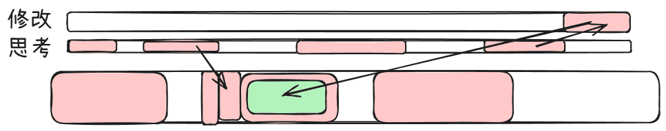
运用
AI输入法
我做过一个简单的Demo（WebTooys其中一个链接博客）
刚发现那里写了，我这里就懒得写了，自己跳转过去看吧
基于Gemini Live的电脑Agent
之前尝试做了，但是由于API的问题没做完放弃了，废弃代码在这里
简单地说就是利用Gemini Live模型的Live功能实现类似于豆包手机的电脑操作Agent
实时接收来自屏幕的图像和来自用户的语音指令，调用键鼠操作库对电脑实现操控
纯AI用户交互
之前做的一个叫LMCanvas的玩意就是一个简单体现（博客），但是不太符合
而且这给想法在后来马斯克在X上提到过，懒得找那个帖子，我记得他大概就是说，以后的UI都是由AI生成了，用户直接与AI交互
在我的想法中，AI直接实时生成图像作为界面，用户直接对其操作，AI接收并做出反应，不断生成新的图像作为画面的下一帧
各个公司提供后端服务，作为工具接入每个人的AI
NanoBanana Vision Solver
废弃代码（我写界面AI生成js）
NanoBanana刚出的时候，这个图像修改和生成能力确实有点强，我就想，能不能做一个东西，把带图像题目输入给它，它理解土木之后做出带图片的解答，直接输出作好了辅助线的样子，直接给出每一个步骤的解析
为什么废了呢？因为我是免费用户，API用不了NB，疏忽了
游戏
一种键盘上玩的音游
之前设想过一种用键盘玩的音游，更那些别的键盘音游不太一样，我这里给出最近回忆起来的时候自己改进的版本
大概的UI长这样：
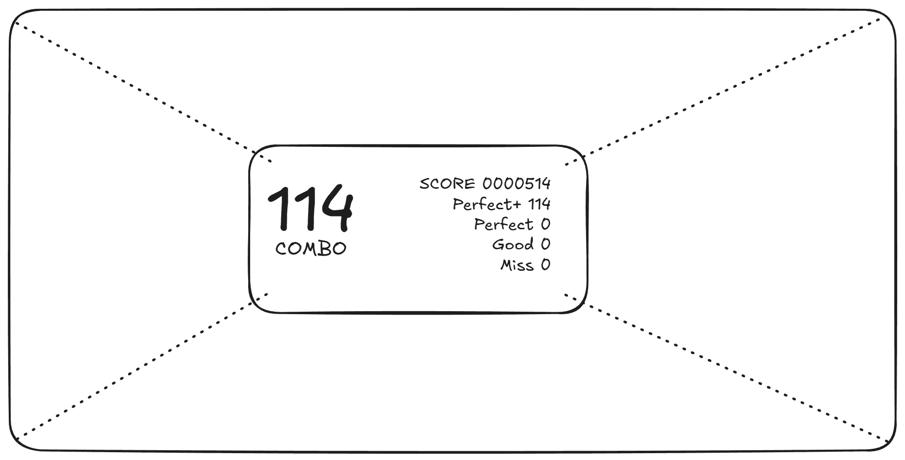
使用四周下落式玩法，分为上下左右四个部分，均为无轨，有以下几种音符：
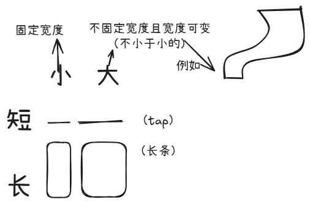
那么大音符和小音符是什么？键盘又怎么玩四周下落？
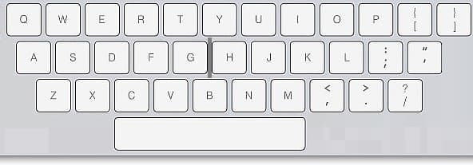
上网照了一张键盘图，有点糊，这些就是全部要用到按键了，我们将按键分为三行（Q行 A行 Z行）：Q行对应上轨道，A行左右两边对应左右轨道，Z行对应下条轨道
小音符要点击一个按键，左右相邻两个按键不得同时触发，大音符要点击多个（两个及以上）相邻按键，且可以换键（只要前后至少有一个键继承着这个长条（蛇）即可），要区分相对左右
比如在上轨道，用IO两个键触发了一个长条，此时屏幕上长条右边又出现了一个键，可以按下U甚至更往左边的键（但是U必须按下），松开O（也可以不），再按下O或P，也可以不用松开I和O直接按下P，总之这个时候按下I左边的键是不能接中的
左右轨道无需区分按键左右与音符位置的关系，但是要区分与左右轨道之间的关系，例如用DF接了右边轨道的一个长条，这个时候想接左边轨道的音符，不能点击D及其右边的按键（除非换键把前面接的长条的键换到右边），只能用A和S
如果遇到长方形的、环绕的、炫彩的音符，那就是要用空格键了
可以适当为画面增加旋转、3D变换、位移等增强手感
一个鼠标玩的战斗游戏
灵感来源：AvM（老AB柴粉丝了我）
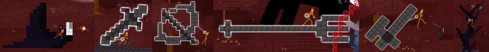
用鼠标指引屏幕中的小人移动，按下按键切换武器，双人PvP，记血条，计算方块消耗
定义一下方块：固定总用量，使用武器会暂时消耗总用量，在画面内乱划在画面内划动创建方块阻挡对手或伤害消耗方块，方块被破坏时回收方块
剑和锤子的话，操作参考这个我之前写的Scratch Demo，无需按住鼠标
弓的话就是按住鼠标召唤弓，拖动鼠标蓄力（可以一瞬间，看距离），松开发射，如果不松开而按下右键就直接Unlimited Blade Works直到松开
就这样吧，没什么好写的
对了，如果你想看一下AI的评价的话，这里有GLM 4.7 / Gemini 3 Flash Thinking / ChatGPT